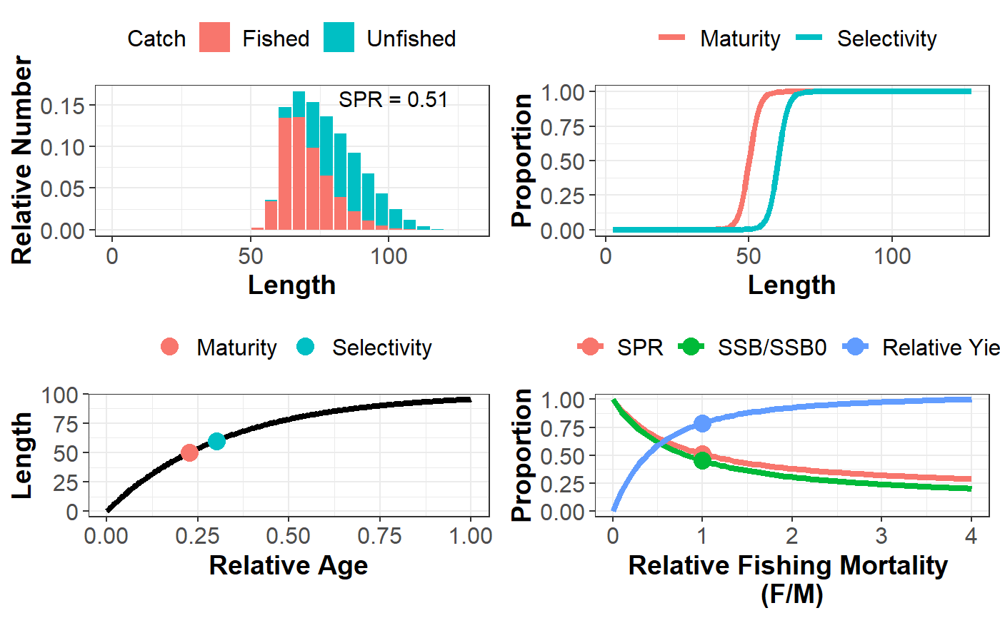

A general function that plots the simulation object. Includes four different plots: equilbrium size structure, maturity and selectivity curves, growth curves, and relative Yield, YPR, SPR, SSB, and Recruitment curves.
plotSim(LB_obj = NULL, type = c("all", "len.freq", "growth", "maturity.select", "yield.curve"), lf.type = c("catch", "pop"), growth.type = c("LAA", "WAA"), y.type = c("SPR", "SSB", "Yield", "YPR"), x.type = c("FM", "SSB", "SPR"), perRec = FALSE, inc.SPR = TRUE, Cols = NULL, size.axtex = 12, size.title = 14, size.SPR = 4, size.leg = 12, inc.pts = TRUE, size.pt = 4)
| LB_obj | an object of class |
|---|---|
| type | a character value indicating which plots to include: "all", "len.freq", "growth", "maturity.select", "yield.curve" |
| lf.type | a character value indicating if the |
| growth.type | should growth be plotted as length-at-age ( |
| y.type | what curves should be plotted on y-axis? |
| x.type | what curves should be plotted on x-axis? |
| perRec | a logical to indicate if plot should be per-recruit (ignore steepness) or not (zero recruitment if SPR below replacement level) |
| inc.SPR | a logical to indicate if SPR value should be printed in top right corner of plot |
| Cols | optional character vector of colours for the plot |
| size.axtex | size of the axis text |
| size.title | size of axis title |
| size.SPR | size of SPR text |
| size.leg | size of legend text |
| inc.pts | Include points on the plots? |
| size.pt | size of the points on the plots |
a ggplot object
LB_pars <- new("LB_pars")#>#>LB_pars@MK <- 1.5 LB_pars@Linf <- 100 LB_pars@L50 <- 50 LB_pars@L95 <- 55 LB_pars@SL50 <- 60 LB_pars@SL95 <- 65 LB_pars@FM <- 1 Sim <- LBSPRsim(LB_pars)#>#>#>plotSim(Sim)